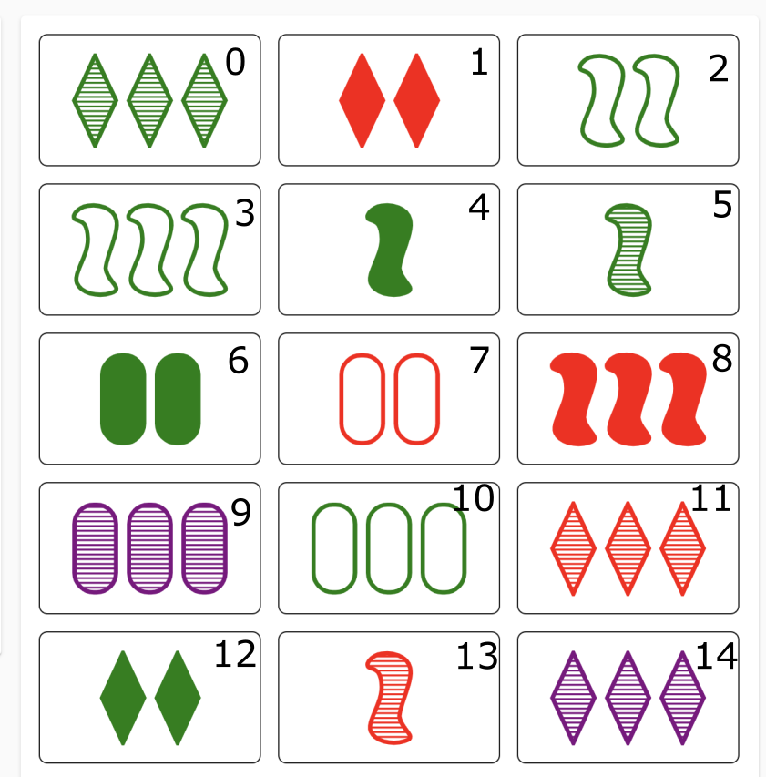

The game Set is played with a deck of 81 cards.
Each card has the following attributes:
A set is a group of 3 cards for which all attributes are either identical across cards or unique to each card.
The goal of the game is to identify as many sets as possible. When a set is found, the finder takes the cards out of play.
The game starts with 12 cards on the board. Cards are added to the board from the deck when either no sets remain or when a set is found.
You can play an online version of the game here: https://setwithfriends.com/
Let n be the maximum number of cards in play during the game. Naively, one may find sets on the board by trying all combinations of three cards O(n^3) - checking if the combination forms a valid set. However, this can be improved to O(n^2) time.
First, note that given any two cards there is a unique third card that forms a valid set. This is found using a simple procedure. For each attribute in the pair, if that attribute is the same, the attribute in the third card is the common attribute, otherwise, it is the missing possibility for that attribute.
Let this third card be called the complement of a pair.
For the improved approach, first store each card in play in a hashset (using sets to find sets :P). Second, find every pair's complement and check for its existence in the hashset. This is analogous to spotting/recalling the complement when playing. To prevent duplicates, only include third cards that have an index greater than the second's in the pair.
Overall this approach has O(n) space complexity and O(n^2) time complexity.
Below is a sample game along with a Python implementation. Index numbers (upper right of each card) are included for identification purposes. The sets are [0, 11, 14], [4, 7, 14], and [5, 10, 12].
